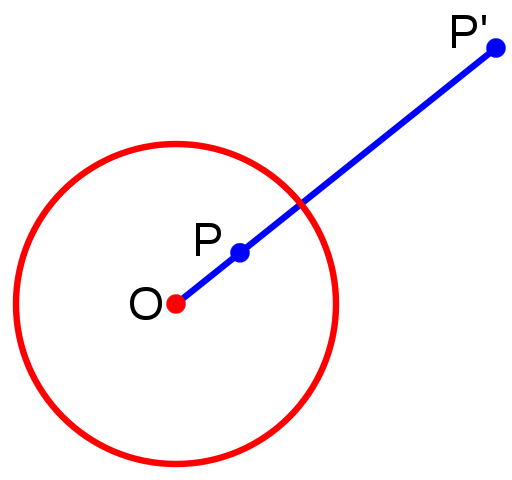
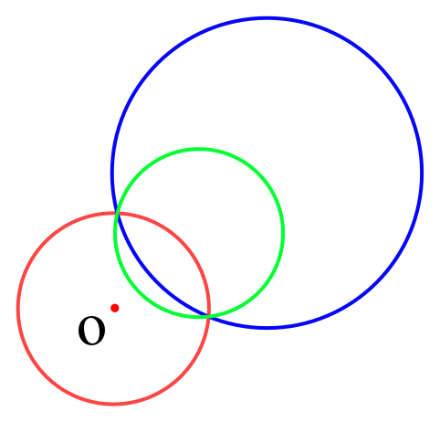
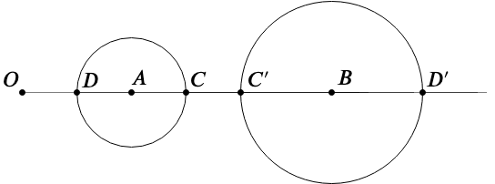
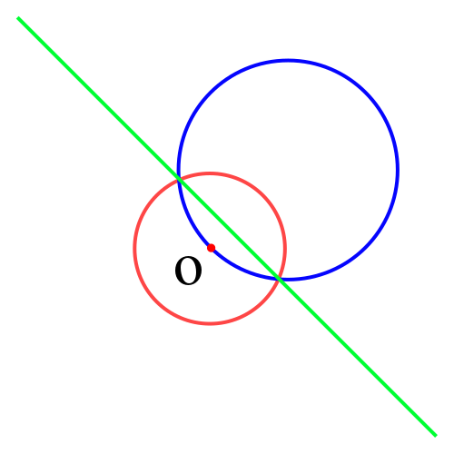

OI Wiki · prijevod · Računska geometrijaOI Wiki · translation · Computational geometry
InverzijaInversion
Sadržaj
Uvod
Inverzija je prikladna kad se u zadatku pojavljuje više odnosa dodirivanja između kružnica i pravaca. Koristeći svojstva inverzije i rješavajući problem u inverznom prostoru, računanje se može znatno pojednostavniti.
Definicija
Zadani su središte inverzije \(O\) i polumjer inverzije \(R\). Ako točke \(P\) i \(P'\) u ravnini zadovoljavaju:
- točka \(P'\) leži na polupravcu \(\overrightarrow{OP}\)
- \(|OP| \cdot |OP'| = R^2\)
tada kažemo da su točke \(P\) i \(P'\) međusobno inverzne.
Objašnjenje
Slika dolje prikazuje inverziju točke \(P\) u ravnini:

Svojstva
-
Inverzna točka točke izvan kružnice \(O\) nalazi se unutar kružnice \(O\) i obrnuto; inverzna točka točke na kružnici \(O\) ona je sama.
-
Inverzna slika kružnice \(A\) koja ne prolazi kroz točku \(O\) također je kružnica koja ne prolazi kroz točku \(O\).

-
Neka je polumjer kružnice \(A\) jednak \(r_1\), a polumjer njezine inverzne slike, kružnice \(B\), jednak \(r_2\); tada vrijedi:
\[ r_2 = \frac{1}{2}\left(\frac{1}{|OA| - r_1} - \frac{1}{|OA| + r_1}\right) R^2 \]
Dokaz

Prema definiciji inverzije:
\[ \begin{aligned} |OC|\cdot|OC'| &= (|OA|+r_1)\cdot(|OB|-r_2) = R^2 \\ |OD|\cdot|OD'| &= (|OA|-r_1)\cdot(|OB|+r_2) = R^2 \end{aligned} \]Eliminiramo \(|OB|\) i riješimo jednadžbu.
-
Neka su koordinate točke \(O\) jednake \((x_0, y_0)\), koordinate točke \(A\) jednake \(x_1, y_1\), a koordinate točke \(B\) jednake \(x_2, y_2\); tada vrijedi:
\[ \begin{aligned} x_2 &= x_0 + \frac{|OB|}{|OA|} (x_1 - x_0) \\ y_2 &= y_0 + \frac{|OB|}{|OA|} (y_1 - y_0) \end{aligned} \]pri čemu se \(|OB|\) može izračunati tijekom gornjeg računanja \(r_2\).
-
-
Inverzna slika kružnice \(A\) koja prolazi kroz točku \(O\) pravac je koji ne prolazi kroz točku \(O\). Naime, inverzna točka one točke kružnice \(A\) koja je beskonačno blizu točki \(O\) beskonačno je daleko od točke \(O\).

-
Ako se dva lika dodiruju i postoji dodirna točka različita od točke \(O\), tada se dodiruju i njihove inverzne slike.
Primjer zadatka
「ICPC 2013, regionalno natjecanje Hangzhou」Problem of Apollonius
Sažetak zadatka
Treba pronaći sve kružnice koje prolaze kroz zadanu točku izvan dviju kružnica i dodiruju obje kružnice.
Rješenje
Najprije razmotrimo pristup analitičkom geometrijom; čini se da ga je vrlo teško provesti.
Razmotrimo inverziju sa središtem u točki kroz koju kružnica mora prolaziti (polumjer inverzije proizvoljan): inverzna slika tražene kružnice je pravac (primjena svojstva \(3\)) koji dodiruje (svojstvo \(4\)) inverzne slike dviju zadanih kružnica (svojstvo \(2\)).
Tako se zadatak nakon inverzije pretvara u: pronaći sve zajedničke tangente dviju kružnica.
Kad pronađemo zajedničke tangente, inverzijom ih vratimo u izvornu ravninu.
Primjer koda
#include <algorithm>
#include <cmath>
#include <cstdio>
#include <cstring>
#include <iostream>
#include <vector>
using namespace std;
constexpr double EPS = 1e-8; // koeficijent preciznosti
const double PI = acos(-1.0); // π
constexpr int N = 4;
// Definicija točke
struct Point {
double x, y;
Point(double x = 0, double y = 0) : x(x), y(y) {}
bool operator<(Point A) const { return x == A.x ? y < A.y : x < A.x; }
};
// Definicija vektora
using Vector = Point;
// Zbrajanje vektora
Vector operator+(Vector A, Vector B) { return Vector(A.x + B.x, A.y + B.y); }
// Oduzimanje vektora
Vector operator-(Vector A, Vector B) { return Vector(A.x - B.x, A.y - B.y); }
// Množenje vektora skalarom
Vector operator*(Vector A, double p) { return Vector(A.x * p, A.y * p); }
// Dijeljenje vektora skalarom
Vector operator/(Vector A, double p) { return Vector(A.x / p, A.y / p); }
// Odnos prema 0
int dcmp(double x) {
if (fabs(x) < EPS) return 0;
return x < 0 ? -1 : 1;
}
// Skalarni produkt vektora
double Dot(Vector A, Vector B) { return A.x * B.x + A.y * B.y; }
// Duljina vektora
double Length(Vector A) { return sqrt(Dot(A, A)); }
// Vektorski produkt vektora
double Cross(Vector A, Vector B) { return A.x * B.y - A.y * B.x; }
// Projekcija točke na pravac
Point GetLineProjection(Point P, Point A, Point B) {
Vector v = B - A;
return A + v * (Dot(v, P - A) / Dot(v, v));
}
// Kružnica
struct Circle {
Point c;
double r;
Circle() : c(Point(0, 0)), r(0) {}
Circle(Point c, double r = 0) : c(c), r(r) {}
// Za zadani polarni kut vraća koordinate točke
Point point(double a) { return Point(c.x + cos(a) * r, c.y + sin(a) * r); }
};
// Zajedničke tangente dviju kružnica; vraća broj tangenti, -1 znači beskonačno mnogo tangenti
// a[i] i b[i] su dirališta i-te tangente na kružnici A odnosno na kružnici B
int getTangents(Circle A, Circle B, Point* a, Point* b) {
int cnt = 0;
if (A.r < B.r) {
swap(A, B);
swap(a, b);
}
double d2 =
(A.c.x - B.c.x) * (A.c.x - B.c.x) + (A.c.y - B.c.y) * (A.c.y - B.c.y);
double rdiff = A.r - B.r;
double rsum = A.r + B.r;
if (dcmp(d2 - rdiff * rdiff) < 0) return 0; // jedna kružnica unutar druge
double base = atan2(B.c.y - A.c.y, B.c.x - A.c.x);
if (dcmp(d2) == 0 && dcmp(A.r - B.r) == 0) return -1; // beskonačno mnogo tangenti
if (dcmp(d2 - rdiff * rdiff) == 0) { // unutarnji dodir, jedna tangenta
a[cnt] = A.point(base);
b[cnt] = B.point(base);
++cnt;
return 1;
}
// postoje vanjske zajedničke tangente
double ang = acos(rdiff / sqrt(d2));
a[cnt] = A.point(base + ang);
b[cnt] = B.point(base + ang);
++cnt;
a[cnt] = A.point(base - ang);
b[cnt] = B.point(base - ang);
++cnt;
if (dcmp(d2 - rsum * rsum) == 0) { // jedna unutarnja zajednička tangenta
a[cnt] = A.point(base);
b[cnt] = B.point(PI + base);
++cnt;
} else if (dcmp(d2 - rsum * rsum) > 0) { // dvije unutarnje zajedničke tangente
double ang = acos(rsum / sqrt(d2));
a[cnt] = A.point(base + ang);
b[cnt] = B.point(PI + base + ang);
++cnt;
a[cnt] = A.point(base - ang);
b[cnt] = B.point(PI + base - ang);
++cnt;
}
return cnt;
}
// Točka O je izvan kružnice A; računa inverznu kružnicu B kružnice A, R je polumjer inverzije
Circle Inversion_C2C(Point O, double R, Circle A) {
double OA = Length(A.c - O);
double RB = 0.5 * ((1 / (OA - A.r)) - (1 / (OA + A.r))) * R * R;
double OB = OA * RB / A.r;
double Bx = O.x + (A.c.x - O.x) * OB / OA;
double By = O.y + (A.c.y - O.y) * OB / OA;
return Circle(Point(Bx, By), RB);
}
// Inverzija pravca u kružnicu B koja prolazi kroz točku O, R je polumjer inverzije
Circle Inversion_L2C(Point O, double R, Point A, Vector v) {
Point P = GetLineProjection(O, A, A + v);
double d = Length(O - P);
double RB = R * R / (2 * d);
Vector VB = (P - O) / d * RB;
return Circle(O + VB, RB);
}
// Vraća true ako su točke A i B s iste strane pravca
bool theSameSideOfLine(Point A, Point B, Point S, Vector v) {
return dcmp(Cross(A - S, v)) * dcmp(Cross(B - S, v)) > 0;
}
int main() {
int T;
scanf("%d", &T);
while (T--) {
Circle A, B;
Point P;
scanf("%lf%lf%lf", &A.c.x, &A.c.y, &A.r);
scanf("%lf%lf%lf", &B.c.x, &B.c.y, &B.r);
scanf("%lf%lf", &P.x, &P.y);
Circle NA = Inversion_C2C(P, 10, A);
Circle NB = Inversion_C2C(P, 10, B);
Point LA[N], LB[N];
Circle ansC[N];
int q = getTangents(NA, NB, LA, LB), ans = 0;
for (int i = 0; i < q; ++i)
if (theSameSideOfLine(NA.c, NB.c, LA[i], LB[i] - LA[i])) {
if (!theSameSideOfLine(P, NA.c, LA[i], LB[i] - LA[i])) continue;
ansC[ans++] = Inversion_L2C(P, 10, LA[i], LB[i] - LA[i]);
}
printf("%d\n", ans);
for (int i = 0; i < ans; ++i) {
printf("%.8f %.8f %.8f\n", ansC[i].c.x, ansC[i].c.y, ansC[i].r);
}
}
return 0;
}
Zadaci za vježbu
「ICPC 2017, online natjecanje regije Nanning」Finding the Radius for an Inserted Circle
「CCPC 2017, online natjecanje」The Designer
Literatura i dodatno štivo
Contents
Introduction
Inversion is suitable when a problem involves several tangency relations between circles and lines. Using the properties of inversion and solving the problem in the inverted space can greatly simplify the computation.
Definition
Given a center of inversion \(O\) and a radius of inversion \(R\). If points \(P\) and \(P'\) in the plane satisfy:
- the point \(P'\) lies on the ray \(\overrightarrow{OP}\)
- \(|OP| \cdot |OP'| = R^2\)
then the points \(P\) and \(P'\) are said to be inverse to each other.
Explanation
The figure below shows the inversion of a point \(P\) in the plane:
Properties
-
The inverse of a point outside the circle \(O\) lies inside the circle \(O\), and vice versa; the inverse of a point on the circle \(O\) is the point itself.
-
The inverse image of a circle \(A\) not passing through the point \(O\) is also a circle not passing through the point \(O\).
-
Let the radius of circle \(A\) be \(r_1\) and the radius of its inverse image, circle \(B\), be \(r_2\); then:
\[ r_2 = \frac{1}{2}\left(\frac{1}{|OA| - r_1} - \frac{1}{|OA| + r_1}\right) R^2 \]
Proof
By the definition of inversion:
\[ \begin{aligned} |OC|\cdot|OC'| &= (|OA|+r_1)\cdot(|OB|-r_2) = R^2 \\ |OD|\cdot|OD'| &= (|OA|-r_1)\cdot(|OB|+r_2) = R^2 \end{aligned} \]Eliminate \(|OB|\) and solve the equation.
-
Let the coordinates of the point \(O\) be \((x_0, y_0)\), the coordinates of the point \(A\) be \(x_1, y_1\), and the coordinates of the point \(B\) be \(x_2, y_2\); then:
\[ \begin{aligned} x_2 &= x_0 + \frac{|OB|}{|OA|} (x_1 - x_0) \\ y_2 &= y_0 + \frac{|OB|}{|OA|} (y_1 - y_0) \end{aligned} \]where \(|OB|\) can be computed during the computation of \(r_2\) above.
-
-
The inverse image of a circle \(A\) passing through the point \(O\) is a line not passing through the point \(O\). This is because the inverse of a point of circle \(A\) infinitely close to the point \(O\) is infinitely far from the point \(O\).
-
If two figures are tangent and there is a point of tangency other than the point \(O\), then their inverse images are also tangent.
Example problem
「ICPC 2013 Hangzhou Regional」Problem of Apollonius
Problem summary
Find all circles passing through a given point outside two circles and tangent to both circles.
Solution
First consider an analytic geometry approach; it seems very hard to carry out.
Consider an inversion centered at the point the circle must pass through (with an arbitrary radius of inversion): the inverse image of the required circle is a line (applying property \(3\)) that is tangent (property \(4\)) to the inverse images of the two given circles (property \(2\)).
Thus, after the inversion, the problem becomes: find all common tangents of two circles.
After finding the common tangents, invert them back to the original plane.
Sample code
#include <algorithm>
#include <cmath>
#include <cstdio>
#include <cstring>
#include <iostream>
#include <vector>
using namespace std;
constexpr double EPS = 1e-8; // precision coefficient
const double PI = acos(-1.0); // π
constexpr int N = 4;
// Definition of a point
struct Point {
double x, y;
Point(double x = 0, double y = 0) : x(x), y(y) {}
bool operator<(Point A) const { return x == A.x ? y < A.y : x < A.x; }
};
// Definition of a vector
using Vector = Point;
// Vector addition
Vector operator+(Vector A, Vector B) { return Vector(A.x + B.x, A.y + B.y); }
// Vector subtraction
Vector operator-(Vector A, Vector B) { return Vector(A.x - B.x, A.y - B.y); }
// Scalar multiplication of a vector
Vector operator*(Vector A, double p) { return Vector(A.x * p, A.y * p); }
// Scalar division of a vector
Vector operator/(Vector A, double p) { return Vector(A.x / p, A.y / p); }
// Relation to 0
int dcmp(double x) {
if (fabs(x) < EPS) return 0;
return x < 0 ? -1 : 1;
}
// Dot product of vectors
double Dot(Vector A, Vector B) { return A.x * B.x + A.y * B.y; }
// Vector length
double Length(Vector A) { return sqrt(Dot(A, A)); }
// Cross product of vectors
double Cross(Vector A, Vector B) { return A.x * B.y - A.y * B.x; }
// Projection of a point onto a line
Point GetLineProjection(Point P, Point A, Point B) {
Vector v = B - A;
return A + v * (Dot(v, P - A) / Dot(v, v));
}
// Circle
struct Circle {
Point c;
double r;
Circle() : c(Point(0, 0)), r(0) {}
Circle(Point c, double r = 0) : c(c), r(r) {}
// Given a polar angle, returns the coordinates of the point
Point point(double a) { return Point(c.x + cos(a) * r, c.y + sin(a) * r); }
};
// Common tangents of two circles; returns the number of tangents, -1 means infinitely many tangents
// a[i] and b[i] are the tangent points of the i-th tangent on circle A and circle B respectively
int getTangents(Circle A, Circle B, Point* a, Point* b) {
int cnt = 0;
if (A.r < B.r) {
swap(A, B);
swap(a, b);
}
double d2 =
(A.c.x - B.c.x) * (A.c.x - B.c.x) + (A.c.y - B.c.y) * (A.c.y - B.c.y);
double rdiff = A.r - B.r;
double rsum = A.r + B.r;
if (dcmp(d2 - rdiff * rdiff) < 0) return 0; // one circle inside the other
double base = atan2(B.c.y - A.c.y, B.c.x - A.c.x);
if (dcmp(d2) == 0 && dcmp(A.r - B.r) == 0) return -1; // infinitely many tangents
if (dcmp(d2 - rdiff * rdiff) == 0) { // internally tangent, one tangent
a[cnt] = A.point(base);
b[cnt] = B.point(base);
++cnt;
return 1;
}
// there are external common tangents
double ang = acos(rdiff / sqrt(d2));
a[cnt] = A.point(base + ang);
b[cnt] = B.point(base + ang);
++cnt;
a[cnt] = A.point(base - ang);
b[cnt] = B.point(base - ang);
++cnt;
if (dcmp(d2 - rsum * rsum) == 0) { // one internal common tangent
a[cnt] = A.point(base);
b[cnt] = B.point(PI + base);
++cnt;
} else if (dcmp(d2 - rsum * rsum) > 0) { // two internal common tangents
double ang = acos(rsum / sqrt(d2));
a[cnt] = A.point(base + ang);
b[cnt] = B.point(PI + base + ang);
++cnt;
a[cnt] = A.point(base - ang);
b[cnt] = B.point(PI + base - ang);
++cnt;
}
return cnt;
}
// Point O is outside circle A; computes the inverse circle B of circle A, R is the radius of inversion
Circle Inversion_C2C(Point O, double R, Circle A) {
double OA = Length(A.c - O);
double RB = 0.5 * ((1 / (OA - A.r)) - (1 / (OA + A.r))) * R * R;
double OB = OA * RB / A.r;
double Bx = O.x + (A.c.x - O.x) * OB / OA;
double By = O.y + (A.c.y - O.y) * OB / OA;
return Circle(Point(Bx, By), RB);
}
// Inverts a line into a circle B passing through point O, R is the radius of inversion
Circle Inversion_L2C(Point O, double R, Point A, Vector v) {
Point P = GetLineProjection(O, A, A + v);
double d = Length(O - P);
double RB = R * R / (2 * d);
Vector VB = (P - O) / d * RB;
return Circle(O + VB, RB);
}
// Returns true if points A and B are on the same side of the line
bool theSameSideOfLine(Point A, Point B, Point S, Vector v) {
return dcmp(Cross(A - S, v)) * dcmp(Cross(B - S, v)) > 0;
}
int main() {
int T;
scanf("%d", &T);
while (T--) {
Circle A, B;
Point P;
scanf("%lf%lf%lf", &A.c.x, &A.c.y, &A.r);
scanf("%lf%lf%lf", &B.c.x, &B.c.y, &B.r);
scanf("%lf%lf", &P.x, &P.y);
Circle NA = Inversion_C2C(P, 10, A);
Circle NB = Inversion_C2C(P, 10, B);
Point LA[N], LB[N];
Circle ansC[N];
int q = getTangents(NA, NB, LA, LB), ans = 0;
for (int i = 0; i < q; ++i)
if (theSameSideOfLine(NA.c, NB.c, LA[i], LB[i] - LA[i])) {
if (!theSameSideOfLine(P, NA.c, LA[i], LB[i] - LA[i])) continue;
ansC[ans++] = Inversion_L2C(P, 10, LA[i], LB[i] - LA[i]);
}
printf("%d\n", ans);
for (int i = 0; i < ans; ++i) {
printf("%.8f %.8f %.8f\n", ansC[i].c.x, ansC[i].c.y, ansC[i].r);
}
}
return 0;
}
Exercises
「ICPC 2017 Nanning Regional Online Contest」Finding the Radius for an Inserted Circle
「CCPC 2017 Online Contest」The Designer